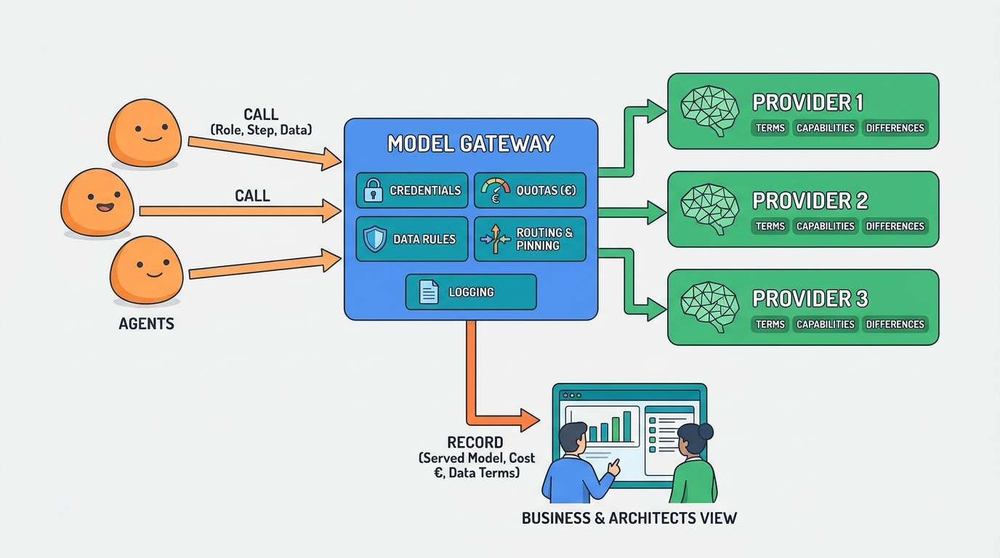

Part II — ARCHITECTURE: The Reference Architecture
Models and the Model Gateway
AI-assisted: written with Claude Code, images generated with the Gemini API. How this works

Image generated by Google Gemini (gemini-3-pro-image-preview)
Part II — ARCHITECTURE: The Reference Architecture
AI-assisted: written with Claude Code, images generated with the Gemini API. How this works

Image generated by Google Gemini (gemini-3-pro-image-preview)